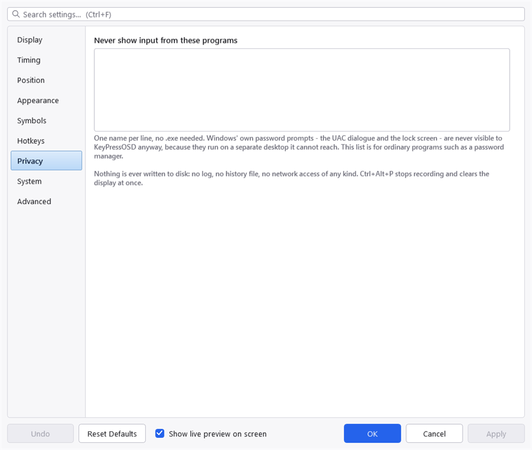

Privacy
KeyPressOSD watches your keyboard. That is the whole point of it, and it is also exactly why the limits below are worth stating precisely rather than in general terms.
What it never does
- It never writes a keystroke to disk. No log, no history file, no crash dump containing one, no cache. What is on screen is in memory and nowhere else, and it is gone when it fades.
- It never sends anything over the network, with one exception: choosing Check for Updates from the tray menu asks GitHub for the list of releases. That happens only when you choose it, and the request carries nothing but a version number in a User-Agent header. Nothing checks at start-up or on a timer.
- It never asks for administrator rights on its own. Its manifest requests none, so it starts as an ordinary program every time unless you choose otherwise — from Always Run as Administrator in the tray menu, or the same switch on the System tab. It is off to begin with, and it cannot be turned on without the Windows consent prompt.
- It installs no service. Turning that switch on does register one scheduled task, which starts KeyPressOSD elevated when you sign in — that is what lets it start elevated without prompting you every time, and it is the only thing this application ever registers. It is named KeyPressOSD (elevated) in Task Scheduler so you can see and remove it there as well as from the menu. Nothing runs with administrator rights when KeyPressOSD is not running, and nothing can elevate it without asking. An elevated instance is a process you started and can close.
- It never injects input. It observes. Text expansion and clipboard rewriting are out of scope for that reason, not because they would be hard.
- It never modifies what you type. The hook returns every keystroke to the system untouched. A bug that started eating keystrokes would be indistinguishable from a broken keyboard, so the code has no path that can consume one.
Excluded programs
The Privacy tab holds a list of programs whose input is never shown. One name per line, no .exe needed.

The exclusion list. One process name per line — the name, not a path, so it applies wherever the program was started from.
This is for a password manager, or anything else where the keystrokes matter more than the demonstration. A program on this list produces no entries at all — so no panel, and no application icon either.
It is a blunt instrument, and deliberately so. A per-control check for password fields would be better and is not reliably possible from outside a process: UI Automation answers for some frameworks and not others, and a heuristic that is right most of the time is precisely the wrong shape here — it would put a password on screen on the occasion it guessed wrong. A named process is a promise that can be kept.
What Windows already protects
Some things need no entry on that list, because a low-level keyboard hook never sees them at all:
- The UAC consent dialogue and the lock screen run on a separate desktop that this process cannot reach.
- Anything in a window running at higher integrity than KeyPressOSD. Windows does not deliver input destined for an elevated window to a hook in a non-elevated process. That protects you from this application, and it is also the reason for a limitation described elsewhere.
This one is the protection you can give up. An elevated KeyPressOSD is at the same level as those windows and does see them — which is the point of running it elevated, and the reason to leave it off unless you need it. It is worth knowing which of the protections on this page is the one that changes: the others do not. An elevated instance still writes no keystroke to disk, still injects nothing, and still cannot reach the UAC prompt or the lock screen, because those are on another desktop rather than behind an integrity check.
Pausing
Ctrl+Alt+P stops recording and clears the display immediately. Nothing is captured while paused.
For something you do occasionally, pause is faster than editing the list. For something you do regularly, the list is better — it cannot be forgotten.
The settings file
KeyPressOSD.json holds settings only. It contains no captured input, and the excluded-programs list is the only thing in it that names anything outside this application.
Startup
Run at Startup writes one value to the per-user Run key in the registry. That is the only thing this application writes outside its own folder, it is optional, and unticking it removes the value.
Project on SourceForge ·
Report a problem · MIT licence ·
This manual is generated from docs/manual.